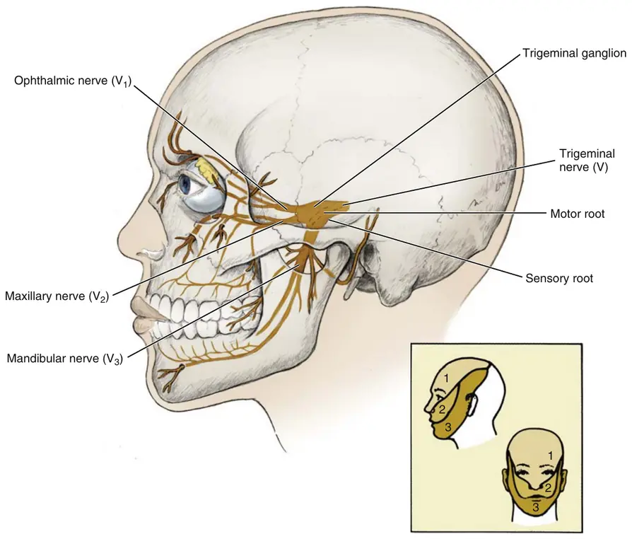
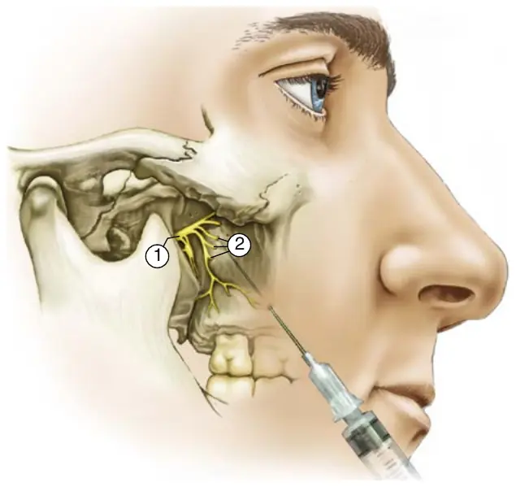

نسخه استخراجشده؛ ترجمه یا تأیید علمی انجام نشده است. وضعیت: captured
برای کشیدن چند دندان فک بالای راست، بلاک عصب ماگزیلاری زده میشود: سوزن از سوراخ پالاتین بزرگ در کام وارد کانال میشود تا دارو به تنهی عصب برسد. چند دقیقه بعد دندانها، کام، لب بالا و کنار بینی همان طرف بیحس است. یک تزریق چطور این همه ناحیه را با هم گرفته است؟

عصب سهقلو (زوج پنجم) بزرگترین عصب مغزی است: یک ریشهی حرکتی کوچک و یک ریشهی حسی بزرگ که از گانگلیون سهقلو (گاسر) به سه شاخه میرسد: افتالمیک (V1)، ماگزیلاری (V2) و مندیبولار (V3). V2 تماماً حسی است.
محلولی که در حفرهی پتریگوپالاتین بنشیند، تنه را پیش از همهی این انشعابها میگیرد؛ برای همین بلاک V2 نیمفک بالا را یکجا بیحس میکند. هر بلاک دیگر فک بالا فقط یک شاخه را در مسیرش هدف میگیرد.
نکتهی طلایی: در حدود ۲۸٪ افراد ریشهی مزیوباکال مولر اول از MSA عصب میگیرد، نه PSA. پس درد در بخش مزیال مولر اول پس از PSA موفق، خطای تکنیک نیست؛ عصب دیگری کار میکند و اینفیلتراسیون، یعنی تزریق کنار نوک همان ریشه، آن را میگیرد.
